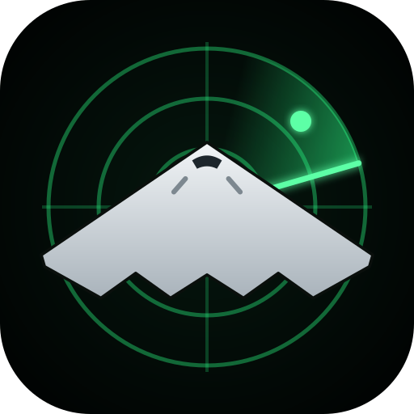

FRONTLINE
LIVE CONFLICT TRACKER
FRONTLINE
US vs Iran
ESCALATION · 24H
● LIVE
–
–
FRONT LINE · 7D
–
–
SENTIMENT · 24H
based on reported coverage
–
De-esc.
Esc.
REPLAY · LAST 48H
–
Animations are symbolic of reported events, not real positions.
How it works
–
1×
LIVE
drag to scrub · events replay as time passes
now
⚠ HYPOTHETICAL · SIMULATION
✕
HYPOTHETICAL · SIMULATION
✕
Conflicts
Loading theatre…
Frontline needs JavaScript and WebGL.